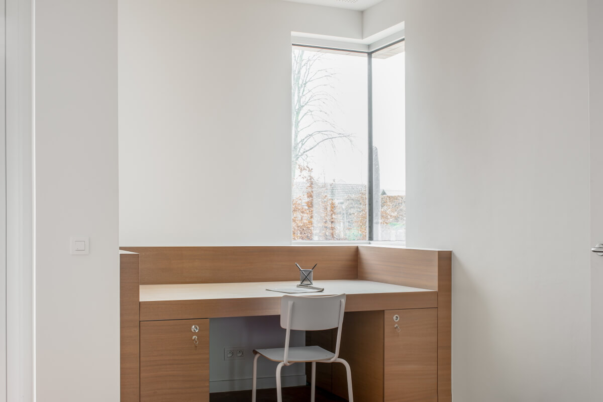

Foto's



Nieuws
Nieuwbouw
Na een lange weg zijn we blij en trots dat we in het hart van Orsmaal een mooi, nieuw gebouw hebben
kunnen realiseren.
Een warme plek voor onze jongeren, een plek om op te groeien, te wonen, te werken, te leven en te
groeien...
We kregen bij de realisatie van dit project de steun van vele partners:
Provincie Vlaams – Brabant
Agentschap Opgroeien
VIPA (Vlaams Infrastructuurfonds voor persoonsgebonden aangelegenheden)
Iedereen die ons aangemoedigd heeft om vol te houden en door te zetten, die ons gesteund heeft op
vele
manieren!
Maar vooral een warme dank aan het creatieve en geduldige team van B-ild Architects, die getekend
hebben
waar wij van droomden en die ons door het hele bouwproces geloodst hebben.
Merci aan Raf,
Kelly en
Bruno!
Dank ook aan Els Vande Kerckhove voor de creatie van ons kunstproject: een warm en kleurvol
wandtapijt
met herkenbare elementen uit de omgeving.
Tot slot ook dank aan Jeroen Verrecht voor de fotoreportage.
We laten jullie aan de hand van enkele foto’s graag binnenkijken!
Dankwoord
We kregen bij de realisatie van dit project de steun van vele partners:
- Provincie Vlaams – Brabant
- Agentschap Opgroeien
- VIPA (Vlaams Infrastructuurfonds voor persoonsgebonden aangelegenheden)
- Iedereen die ons aangemoedigd heeft om vol te houden en door te zetten, die ons gesteund heeft op vele
manieren!
Maar vooral een warme dank aan het creatieve en geduldige team van B-ild Architects, die getekend hebben
waar wij van droomden en die ons door het hele bouwproces geloodst hebben.
Merci aan Raf, Kelly en
Bruno!
Dank ook aan Els Vande Kerckhove voor de creatie van ons kunstproject: een warm en kleurvol wandtapijt
met herkenbare elementen uit de omgeving.
Tot slot ook dank aan Jeroen Verrecht voor de fotoreportage.
>